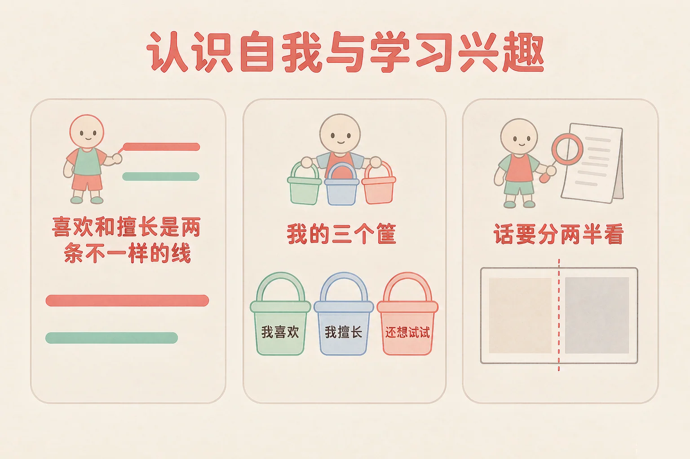
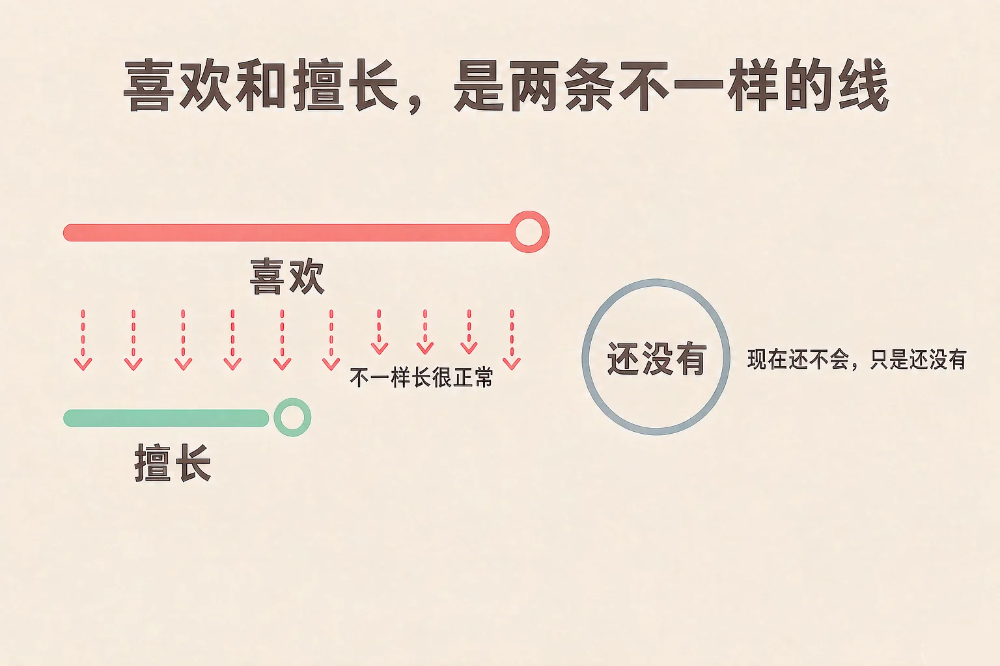
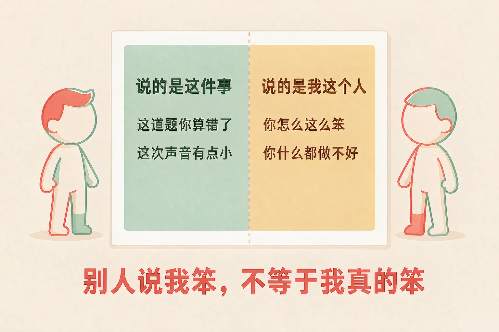

Gallery
v1.0.0 · skill v7.22.0
小学三年级 · 认识自我
你知道自己喜欢什么、擅长什么吗？这两件事，常常不一样。

选一个你真正想知道的问题，后面的活动都会围着它转。
选择或输入后，这节课会围绕你的问题展开。
先凭直觉选一个，选完立刻看到解释——错了也没关系，正好知道要重点听哪里。
1. 下面哪一句，说的是「擅长」这件事？
「做起来比平时顺一点」更像擅长；「很喜欢」是喜欢；「还没开始」是还想试试。三件事都不一样，都很正常。错因提醒：常见错误是把「喜欢」和「擅长」搞混——喜欢是心里高兴，擅长是做起来顺，它们常常不是同一件事。
2. 同桌对你说了一句：这么简单的题你都不会。下面哪个想法更有帮助？
把这句话落回到具体的那道题上，你就知道下一步做什么了；把它接到「我这个人」身上，只会让人更没力气。错因提醒：有人误认为「别人说我不好，就一定是我不够好」——别人的话是一句评价，不是一个事实。
3. 有一件事我做得不太好，但我很喜欢。下面哪个做法更合适？
喜欢的事情本身就值得做，做着开心就是它的意义。做得久了，常常也会变好。错因提醒：容易误认为「做不好就不该做」——「喜欢」不需要先通过考试才有资格继续。
为什么要学这一课？
二年级的时候，我们已经认识过自己的心情，知道开心和不开心都可以说出来（And）；可是很多同学对自己的了解只停在一句「我很普通」，说不清自己到底喜欢什么、擅长什么（But）；所以这节课我们做一件具体的事——把「喜欢」和「擅长」分成两条线，再自己动手，做出一张属于你的特点卡（Therefore）。
先说第一件事：喜欢说的是心里高不高兴，擅长说的是做起来顺不顺。它们常常不一样长。
喜欢，但不那么擅长
我很喜欢画画，可画出来的小动物总是不太像。没关系——喜欢的事情，做着开心本身就已经够了。
擅长，但没那么喜欢
我很会整理书包，东西放得又快又齐，可要问我喜不喜欢，我也说不上来。这也是一种真实的样子。

有的同学误认为「做得好的事才值得花时间，做不好的就没必要做」。其实喜欢的事情本身就值得做：做着开心，会让你更愿意一直做下去；一直做下去，常常也就慢慢做好了。做不好，不等于不该做。
🔍 深层理解 换个角度再看一遍这件事，看看能不能说出背后的原理。
看见它：从小到大，一定有一些时刻你做一件事做得很投入，连时间都忘了。那些时刻里藏着你的兴趣，值得记下来。
比较它：把你喜欢的事和你擅长的事各写三条，两条对着看。你会发现它们有的重叠，有的完全不一样——两种都很好。
迁移它：这个分法到哪里都能用：选课外活动、挑小组任务、想以后做什么，都可以先问问自己这两句话。
点一张卡片，再点它应该进的筐。怎么放你自己说了算，这里没有标准答案，放错了也不会扣分。
先在上面点一张卡片。
有时候，别人会对我们说一句不好听的话。这时候，请把这句拆成两半来看。
一半说的是事情
「这道题你算错了」「你这次朗读声音有点小」——它指向一个具体的题、一次、一处。事情是可以改的，改一改就好了。
一半是在贴标签
「你怎么这么笨」「你什么都做不好」——它用一个词把你说成一整个人。标签不是事实，它只是别人的一句评价。

有的同学误认为「听到不好听的话，就必须马上生气地反驳回去，或者干脆承认自己就是不行」。其实还有第三条路：先在心里把它分成两半——事情拿来用，标签可以放下。你不用当场证明什么，只要知道自己不是那句话说的样子。
🔍 深层理解 换个角度再看一遍这件事，看看能不能说出背后的原理。
看见它：听到不好听的话，心里会发紧、发沉，这是很正常的反应。先承认这份不舒服，再慢慢处理那句话，比马上反驳更容易。
拆开它：拿一张纸，把听到的那句话写在中间，左边写「它说的是哪一件事」，右边写「它给我贴了什么词」。写出来，两半就分开了。
迁移它：这个办法也可以用在你自己身上：你对自己说「我数学就是不行」的时候，也停一下——是「这道题不行」，还是「我这个人不行」？
点一句话，再点它属于哪一半。判定的时候看范围：它说的是一个具体的题、一次、一处，还是把什么都算上了？
分好的结果
说的是这件事（可以改）
说的是我这个人（贴的标签）
先在上面点一句话。
情境：数学卷子发下来，小语错了两道题。同桌看了一眼，说了一句：你怎么这么笨啊。小语心里一下子沉下去，觉得自己什么都不行。请你陪她走四步。
有的同学误认为「被说了不好听的话，只有两种选择：要么认了，要么吵回去」。小语这四步里走了第三条路——她既没认，也没吵，只是把那句话拆开，把能用的那半拿走了。这样，她省下了吵架的力气，用在了两道题上。
说给同桌听：你有没有听过一句让你心里不舒服的话？把它写在纸上，左边写「它说的是哪一件事」，右边写「它给我贴了什么词」，再换一句你能用的话。
先凭直觉选一个，选完立刻看到解释——错了也没关系，正好知道要重点听哪里。
1. 下面哪一句说的是「这件事」，不是给我整个人下结论？
「这次」「有两句」把范围说得很清楚，这就是在说事情，改起来也知道从哪里下手。错因提醒：常见错误是把「这一次没做好」和「我这个人不行」搞混——一件事的结果，不等于对一个人的评价。
2. 我很喜欢做手工，可是做出来的东西总是不太好看。下面哪个想法更有帮助？
喜欢是心里的事，好不好看是手上的事，两件事会一起变，但不用同时到达。错因提醒：容易误认为「做不好就等于没天赋」——现在还不熟，只是「还没有」练够次数。
3. 有一个同学说自己很想学游泳，可是一直没学过。你会怎么对他说？
还没做过的事，只是「还想试试」，属于第三个筐，它是一颗小种子，不是缺点。错因提醒：有人误认为「没做过等于不行」——把「还没做」当成「做不到」，会白白错过很多好玩的事。
三栏各选一样，就做好了你的特点卡。这张卡不需要和别人比，它只写你现在的样子。
① 我最喜欢做的一件事 已选：还没有选
② 我喜欢它，是因为 已选：还没有选
③ 我还想去试试的一件事 已选：还没有选
三栏各选一样，特点卡就做好了。
再写一句给自己的话：
这句话的开头是「我身上的这几样，没有好坏，只有不同」，把它写完。
先凭直觉选一个，选完立刻看到解释——错了也没关系，正好知道要重点听哪里。
1. 我有一件很喜欢的事，可是做得一直不太好，同桌说：你还是别做了。下面哪个做法更合适？
喜欢的事情本来就值得继续；别人的建议里如果有能用的那一半，就拿来用，剩下的可以放下。错因提醒：常见错误是把「别人给的一个建议」当成「对我整个人的否定」——先看看他说的是哪件事，再决定要不要改。
2. 妈妈说：你看看人家，样样都比你强。听到这句话，下面哪个想法更有帮助？
人和人本来就不一样，「哪里都比」不是一个站得住的比法。找到你自己的那两三条，比名次更实在。错因提醒：有人误认为「比不过别人就说明我不好」——把「比较」和「评价自己」分开，心里会稳得多。
3. 有一件事我试了好几次还是不会，心里有点想放弃。下面哪个做法更合适？
现在不会，只说明「还没有」学会。放一放、换个人请教、把步骤再拆小一点，都是继续往前走的方式。错因提醒：容易把「还没有学会」说成「永远学不会」——加一个「还」字，事情就不一样了。
还要记牢一件事：每个人的节奏不一样。有的同学很早就知道自己喜欢什么，有的同学要试很多次才知道——这两种都正常，慢慢找也没关系。
给别人讲一遍：请用「喜欢、擅长、还没有」这三个词，说一说你自己。
再动一动手：画一画你的三个筐，把卡片写成小纸条贴进去，放在书桌旁边。
三层练习，做完第一、二层就算通关；第三层留给愿意继续探索的同学。
⭐ 基础巩固（必做）
⭐⭐ 能力应用（必做）
⭐⭐⭐ 迁移挑战（选做）
左边是学它之前要先会的，右边是学会之后可以继续探索的，下面是同一领域的伙伴知识。
图谱正在加载：首次进入需下载知识索引（约 1–3 秒），加载完成后本行会自动消失。